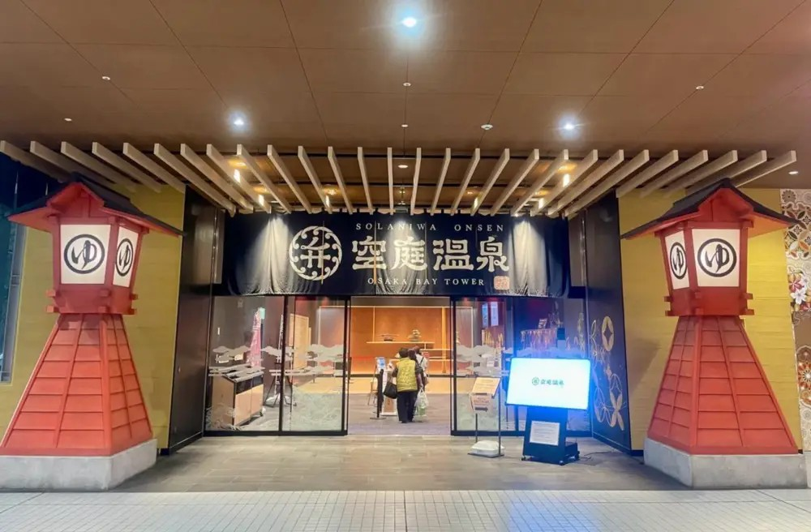

♨️ 全室內 0 日曬 ✕ 天然美肌溫泉 ✕ 千坪空中足湯弁天町・空庭溫泉 ✕ 浴衣千坪空中足湯 ✕ 0戶外大放鬆 O 型環線
起訖樞紐：JR 環狀線「弁天町站」2A 出口（JR 直達 8 分鐘，室內空調空橋直通 2 分鐘）。
適合情境：體力耗盡大放鬆首選 或 雨天/酷暑備案，洗去連續數日旅行的雙腿痠痛！
📜 安土桃山美學、天然泉質與千坪空中庭園
• 安土桃山時代 (1568~1603) 絢爛穿越：空庭溫泉以織田信長與豐臣秀吉開創的「安土桃山文化」為設計核心，館內處處可見華麗金碧的浮世繪、太鼓橋與日式長廊。入場即可免費挑選多款男女華麗浴衣與木屐，一秒穿越回四百年前的繁華盛世。
• 地下 1,000m 天然弱鹼性「美肌之湯」：源自地下千米深處湧出的天然碳酸氫鈉泉質，觸感絲滑溫潤，能溫和軟化肌膚角質並加速血液循環。館內擁有源泉風呂、庭園露天溫泉、高濃度碳酸泉與絹水素風呂等 9 大泉池，對消除走了一整天路的小腿痠痛有極致神效。
• 頂樓千坪空中日式庭園足湯：頂樓打造成巨大的迴遊式日式空中庭園，點綴著朱紅太鼓橋、流水瀑布與千本鳥居。夜間燈光亮起時，與家人穿著浴衣邊泡足湯邊吹晚風賞夜景，極具渡假儀式感。
🗺️ 順向 O 型動線分步指引 (全室內 0 日曬)
從 Granvia 飯店大廳搭電梯下樓至 JR 大阪站月台，搭乘 JR 大阪環狀線（內回）僅需 8 分鐘即抵達「弁天町站」。走 2A 出口室內空調空橋直通 OSAKA BAY TOWER，全程 0 日曬雨淋。
・挑選自己喜愛花色的日式浴衣與腰帶。
・走入溫泉區，浸泡天然弱鹼性「美肌之湯」、微氣泡絹水素風呂與高濃度碳酸泉，徹底放鬆緊繃肌肉與雙腿。
穿著浴衣登上頂樓千坪空中日式庭園，在朱紅太鼓橋、千本鳥居與瀑布前拍照；赤腳泡入溫暖的露天足湯，吹著涼爽夏夜晚風，享受極致悠閒。
不必外出覓食，直接在館內安土桃山風「食倒橫丁」享用現烤串燒、大阪燒、海鮮刺身與冷生啤酒。
用餐後換回便服，原路經室內空調走廊返回弁天町月台，搭 JR 8 分鐘直達 JR 大阪站 Granvia 飯店回房就寢！
💬 社群旅人實戰評價精選
「走完姬路城那天小腿快廢了，衝空庭溫泉換浴衣泡熱湯簡直救命！頂樓足湯拍照超仙，吃飽喝足搭 JR 八分鐘直接回梅田飯店床上躺平，是關西旅行最完美的療癒備案！」—— Threads 日本旅遊熱評